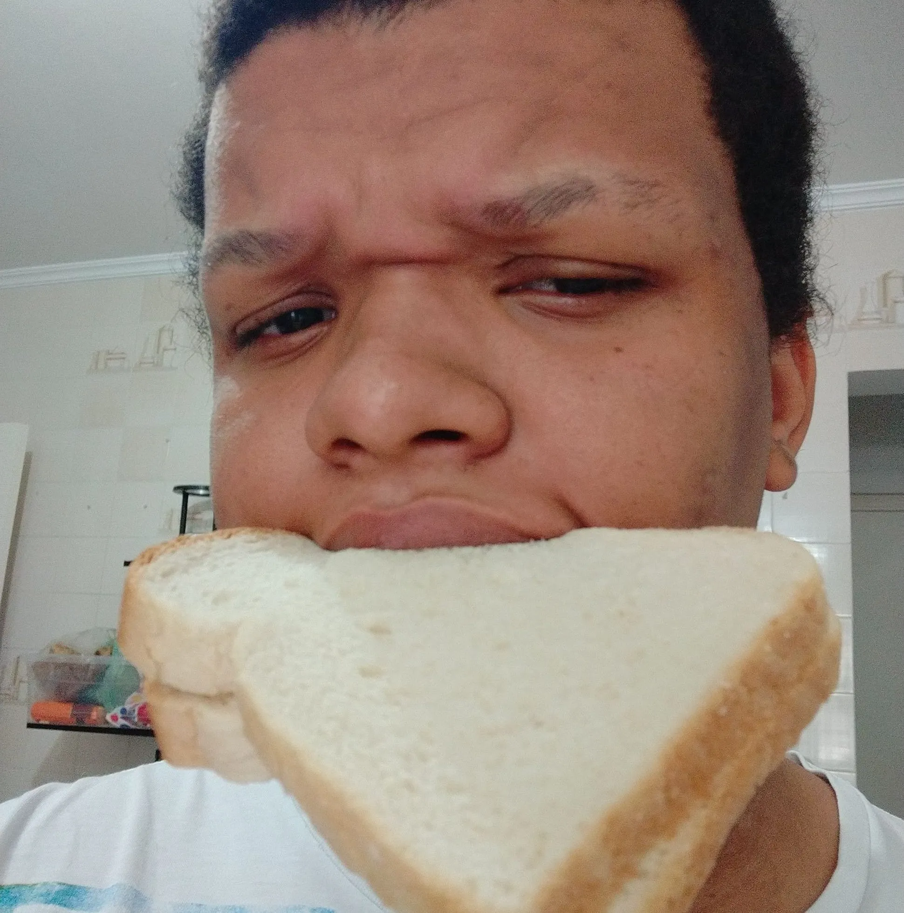
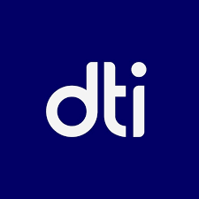
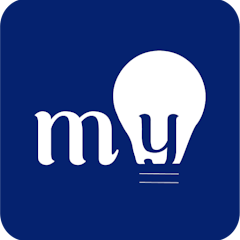

Graduado em Ciência da Computação pela Universidade Federal de Viçosa (2026), construí uma trajetória sólida em Engenharia de Software, atuando no desenvolvimento de soluções robustas tanto no âmbito acadêmico quanto no mercado.
Minha stack tecnológica é diversificada e versátil, com fluência em C#, Java, JavaScript e Python. Transito com naturalidade por frameworks modernos como .NET Core, Spring, NestJS, Django e Flask, aliando essas competências ao desenvolvimento de interfaces dinâmicas com React e Angular, bem como aplicações desktop via Qt e Windows Forms. Complemento essa expertise com uma gestão proficiente de bancos de dados relacionais e não relacionais.
Além do desenvolvimento core, possuo uma visão integrada do ciclo de vida do software, aplicando práticas de DevOps e CI/CD (GitHub Actions, Terraform). Meu perfil técnico se expande ainda para a análise de dados e Inteligência Artificial, com vivência em Pandas e projetos focados em Processamento de Linguagem Natural (NLP).
SetApp UFV (Início de carreira): Iniciei minha trajetória profissional na Empresa Júnior de Ciência da Computação da UFV-Florestal. Atuei como desenvolvedor no projeto ReciClick, uma solução mobile em Flutter encomendada pelo Instituto de Referência em Resíduos (IRR). O aplicativo teve como foco o incentivo à coleta seletiva e a gestão de resíduos no município de Contagem/MG.

DTI Digital (Desenvolvimento de Software): Ingressei como estagiário e fui efetivado para atuar em projetos de grande porte. Trabalhei no desenvolvimento de soluções para a Pottencial Seguradora (insurtech) e integrei squads internacionais atendendo a Hill's Pet Nutrition (subsidiária da Colgate-Palmolive), colaborando diretamente com times nos Estados Unidos e Canadá.
A5M Tecnologia (Empreendedorismo): Fundei minha própria empresa de tecnologia para oferecer consultoria e desenvolvimento de software personalizado. Gerenciei o ciclo completo de projetos para pequenas e médias empresas, conciliando a gestão do negócio com minhas atividades acadêmicas e atuação corporativa, o que fortaleceu minha capacidade de autogestão e entrega.

NESPeD (Pesquisa e Desenvolvimento): Atuei como bolsista de Iniciação Científica no desenvolvimento do myMobiconf, um sistema colaborativo de gestão de eventos. Fui responsável pelo desenvolvimento do backend, atuando também no frontend, administração de servidores e implementação de rotinas de DevOps (CI/CD), garantindo a estabilidade e escalabilidade da plataforma.

